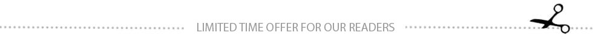

Erectile dysfunction is a latent killer of men! A practicing surgeon told how quickly problems with potency will lead to the operating table
Dr.Sanjay: “95% of my patients initially had problems with potency. Unfortunately, doctors do not inform men about all the dangers of impotence and most often prescribe only Viagra…. Because of this, only a small part of the patients can be saved on the operating table.”
- Dr.Sanjay, according to statistics, the number of men experiencing problems in sex is increasing, and the pathology itself is getting younger. This is happening not only in USA, but all over the world. However, despite such a widespread problem, not many men go to doctors, preferring to take Viagra and similar drugs. Tell me, what is the danger of such treatment?
- First of all, taking Viagra or similar synthetic drugs was NEVER CONSIDERED A TREATMENT. Even more than that, these drugs have never been treated as medicinal. It's like taking a painkiller for a migraine. An erection will appear abnormally for a while, but the problems will not only remain, but will intensify. The formula is simple: the more often you use Viagra, the more you undermine potency.
Taking Viagra is accompanied by terrible side effects - from headaches to heart attacks. In addition, it changes the chemical composition of the blood. But abstaining from sex is even worse, as it is the #1 cause of cancer cells in the prostate.
Many men do not even take Viagra: they simply stop having sex altogether. There is no potency, and let it be, and so it's normal .... This is especially true for older men. However, the lack of sex is what will kill a man faster.
- Could you explain your statements, what exactly is the danger of the absence of sex?
- It is dangerous that prolonged abstinence leads to the growth of the prostate gland with foci of cancerous reproduction. See what happens in the prostate in the absence of sex ....
One of the main functions of the prostate gland is the production of a special secret, which, during ejaculation, mixes with spermatozoa, diluting them. The gland contains a constant supply of secretions. Chemically, it is 100% protein. The same as in a chicken egg. Now imagine what happens during long-term storage of such a protein? When it does not renew itself due to prolonged absence of ejaculation, for example, more than a month?
It "rots", pathogenic bacteria develop in it. This inflames the prostate tissue. This disease is called chronic prostatitis. Only in moments of exacerbation, prostatitis makes itself felt (in the form of pain and difficulty urinating), while at other times this pathology is asymptomatic. Bacteria penetrate deep into tissues. This in turn is the trigger for another very dangerous process. Namely, the appearance of cancer cells against the background of continuous inflammation of the gland tissue.
Prostate cancer, or prostate cancer, is one of the most common cancers in men. It is also the cause of death for almost a quarter of men. And if a man has problems with potency, the risk of prostate cancer increases by about 20 times!
Prostate cancer needs to be operated on urgently. A few months, and the man can no longer be saved. A year, two maximum live with this type of cancer. Cancer cells first multiply on the prostate itself, and then affect all nearby tissues and organs: the ureters, bladder, kidneys, testicles and the penis itself.
- You said that Viagra and similar drugs are not a way out of the situation. What to do to people who have problems with potency?
- As I already said, in order not to get on the operating table and not die in terrible pain from oncology, one must fight not with the symptoms, but with the causes of erectile dysfunction.
It is now 20242023, and medicine has drugs that can cure this pathology. That is, not just to strengthen an erection for a while, as Viagra and other synthetic drugs do, but to return a man's NATURAL POTENTITY - the one that APPEARS BY ITSELF WITHOUT THE USE OF EXCITING MEDIA.
- There are many techniques, but the most effective, according to modern urology, is the use of vascular tonics. In 2023-2024, the use of such drugs has become the gold standard for the treatment of erectile dysfunction. In USA, there is only one such drug - it is called Canna LABS CBD Gummies.
- Could you tell us in more detail what “vascular tonics” are and how this treatment differs from taking Viagra, Cialis, Levitra, etc.?
- Differs in a basis. Viagra not only does not cure, but only makes things worse, as it aggravates the situation. Because of it, the vessels lose their tone, and impotence only intensifies. This applies to all preparations containing sildenafil.
Vascular tonics have a completely different mode of action. In order to understand how these drugs work, it is necessary to tell how a man's penis increases during an erection. I will try to make it as simple and clear as possible.
The penis of a man is 99% composed of cavernous bodies and resembles an ordinary sponge. During an erection, it fills with blood and increases in size. Two large vessels approach the organ - the dorsal artery and the dorsal vein. Blood enters the penis through an artery and is drained through a vein. Erection as a process, in fact, is a kind of game of these vessels.
Look, when a man sees a beautiful girl, a signal is formed in the brain to open special valves in the dorsal artery and close the same valves in the dorsal vein. After ejaculation (or when the excitement has subsided), on the contrary, the valves in the artery close, and they open in the vein. The blood drains from the penis, and it shrinks in size.
With vascular impotence (namely, it is observed in the vast majority of men), there is a decrease in the tone of the vascular valves. The venous valves have a particularly hard time, as they have to keep blood under pressure in the penis. They stop dealing with it. If the venous valves are held "poorly", the man has a sluggish erection, if they do not hold at all, then they usually speak of complete impotence.
What do vascular tonics do? As the name implies, they strengthen the valves, increase their tone. This is achieved due to a special substance - alpha-phylloquinone. This is a rare form of vitamin K that has been discovered relatively recently. In 2015, scientists from Switzerland received the Nobel Prize for its discovery. This substance is able to significantly increase the tone of smooth muscles, including vascular valves.
This substance is extremely effective in the treatment of erectile dysfunction in men.
2 years ago in our Center we conducted research using Canna LABS CBD Gummies. About 300 men suffering from problems with potency took his course. In 96% of them, the sexual sphere has completely returned to normal. The age of the patients ranged from 40 to 65 years. That is, Canna LABS CBD Gummies copes well with age-related weakening of potency.
If you want to feel the joy of sex again without dangerous chemicals, I recommend this drug. Only there is one point, Canna LABS CBD Gummies is not sold in American pharmacies ....
Canna LABS CBD Gummies is distributed in USA under license by the Institute of Urology. To receive Canna LABS CBD Gummies, you must leave a request, after which you will be sent Canna LABS CBD Gummies directly to your address. Delivery of Canna LABS CBD Gummies is carried out throughout USA. The drug itself is distributed without pharmacy margins at a minimum cost.
Such a policy of the manufacturer to distribute Canna LABS CBD Gummies exclusively through medical institutions makes the drug as accessible to the population as possible, and also eliminates the risk of feiting Canna LABS CBD Gummies.
Important! Information from the manufacturer
The average course of taking Canna LABS CBD Gummies is 7-14 days. Canna LABS CBD Gummies has both an immediate effect (an erection appears immediately after taking the drug) and a prolonged one (used to treat erectile dysfunction and weakened potency)
Canna LABS CBD Gummies is recommended for men aged 20 to 70 with occasional or persistent potency problems.
Basic and additional actions Canna LABS CBD Gummies
- Restores natural potency
- Enhances libido
- Increases the duration of sexual intercourse
- Strengthens blood vessels in the pelvic area
- Boosts testosterone production
- Stimulates nerve endings
- Heals the prostate gland
- Prevents the development of adenoma and prostate cancer
Contraindications and side effects have not been identified. The drug has a completely natural composition.
Canna LABS CBD Gummies is shipped in anonymous packaging. No one but you will know what is inside.
How to order Canna LABS CBD Gummies in USA?
In order to leave a request for Canna LABS CBD Gummies purchase please visit the official website. Your application will be sent directly to the Institute of Urology. Institute staff will call you back within 10 minutes.
Attention! Canna LABS CBD Gummies is coming to an end!
Currently in stock:
84
As soon as you submit your application, Canna LABS CBD Gummies will be automatically booked for you. You don’t need any notes or certificates to receive the drug!

(Canna LABS CBD Gummies running out fast. I recommend all men to leave a request for Canna LABS CBD Gummies on the website while it’s still in stock)
Update: As of Limited Canna LABS CBD Gummies Still Available.
Click to Receive A Canna LABS CBD Gummies
Take advantage of this exclusive link before it sells out!
See terms for details
Comments